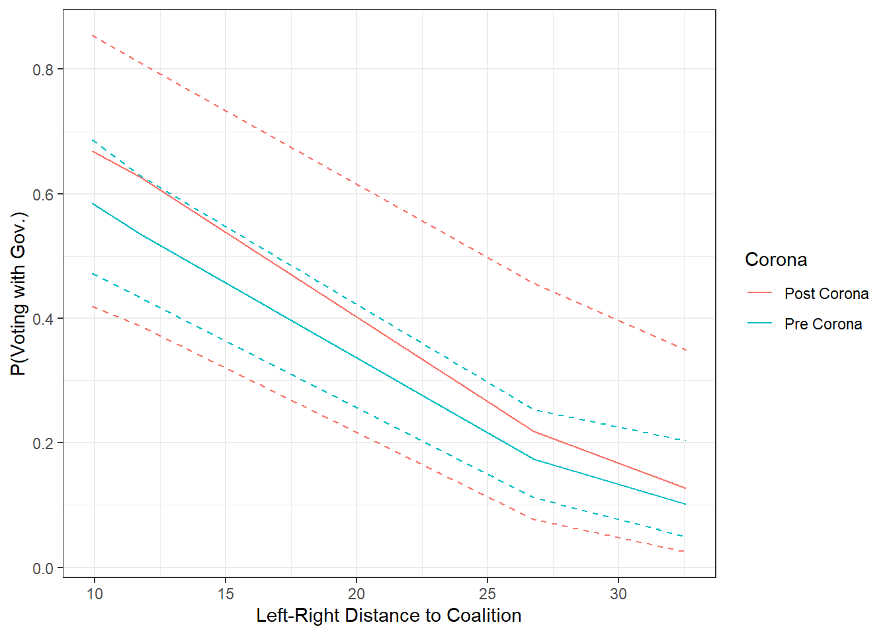

In the following, I will conduct a short analysis of Bundetags-votes by opposition parties in the 19th legislative period between 2018 and the autumn of 2020.
AfD |
DIE GRÜNEN |
DIE LINKE |
FDP |
Overall |
||||||
|---|---|---|---|---|---|---|---|---|---|---|
| Post Corona (N=13) |
Pre Corona (N=63) |
Post Corona (N=12) |
Pre Corona (N=59) |
Post Corona (N=14) |
Pre Corona (N=62) |
Post Corona (N=13) |
Pre Corona (N=63) |
Post Corona (N=52) |
Pre Corona (N=247) |
|
| Relative Seat share | ||||||||||
| Mean (SD) | 0.133 (0) | 0.133 (0) | 0.0945 (0) | 0.0945 (0) | 0.0973 (0) | 0.0973 (0) | 0.113 (0) | 0.113 (0) | 0.109 (0.0152) | 0.110 (0.0152) |
| Median [Min, Max] | 0.133 [0.133, 0.133] | 0.133 [0.133, 0.133] | 0.0945 [0.0945, 0.0945] | 0.0945 [0.0945, 0.0945] | 0.0973 [0.0973, 0.0973] | 0.0973 [0.0973, 0.0973] | 0.113 [0.113, 0.113] | 0.113 [0.113, 0.113] | 0.105 [0.0945, 0.133] | 0.113 [0.0945, 0.133] |
| Distance to Government | ||||||||||
| Mean (SD) | 26.8 (0) | 26.8 (0) | 11.7 (0) | 11.7 (0) | 32.6 (0) | 32.6 (0) | 9.92 (0) | 9.92 (0) | 20.6 (9.83) | 20.3 (9.69) |
| Median [Min, Max] | 26.8 [26.8, 26.8] | 26.8 [26.8, 26.8] | 11.7 [11.7, 11.7] | 11.7 [11.7, 11.7] | 32.6 [32.6, 32.6] | 32.6 [32.6, 32.6] | 9.92 [9.92, 9.92] | 9.92 [9.92, 9.92] | 26.8 [9.92, 32.6] | 26.8 [9.92, 32.6] |
| Days until next election | ||||||||||
| Mean (SD) | 477 (60.3) | 1010 (238) | 475 (61.4) | 1010 (238) | 482 (61.1) | 1020 (237) | 476 (58.9) | 1010 (239) | 477 (58.7) | 1010 (237) |
| Median [Min, Max] | 485 [353, 562] | 982 [605, 1380] | 485 [353, 562] | 982 [605, 1380] | 486 [353, 562] | 1010 [605, 1380] | 485 [353, 562] | 948 [605, 1380] | 485 [353, 562] | 982 [605, 1380] |
The above table shows descriptive statistics for all of the variables in my model. The main explanatory factor to explain differences in opposition voting behaviour is a dummy indicating the time before (0) and after (1) the onset of the Corona pandemic in Germany in march 2020. I further include the relative seat share of a party into the model, as well as its ideological distance to the SPD-CDU/CSU led coalition as measured by the CMP-data. I further include the days until the next election in autumn of 2021, indicating that the closer an election, the more confronting opposition parties are likely to be in parliament. As already becomes appearent, the number of roll call votes in the Bundestag after March 2020 is fairly limited. We should thus not expect to observe significant differences in behaviour before and after Corona.
When analysing the effects of party- as well as vote-specific characteristics on an outcome variable, one promising approach would be to apply a multilevel model with random intercepts and/or slopes on the vote- as well as the party level. On the other hand, such models have the tendency to overfit, further they are not easily interpreted and may not converge with an N too small. That is why I will apply a logistic regression model as:
\[P(Vote = 1 | X = X_i ) = P(Vote = 1) = \frac{1}{1 + exp(-x_i\beta)}\]
whereas my systematic component \(x_i\beta\) is:
\[X_i\beta = (x_1\beta_{Corona},x_2\beta_{DaysNextElection},x_3\beta_{LeftRightDistance},x_4\beta_{RelSeatShare},x_5\beta_{AfD})\]
I thus expect the likelihood to vote in line with the government coalition in Germany is a function of whether the vote happend before or after Corona, the distance to the next election, the distance of a party to the coalition in ideological terms and the relative seat share of a party. I further include the AfD as a control since it is a party with unsual legislative behaviour as a populist and I thus want to account for the possibility that the AfD may yield patterns of behaviour that are otherwise left unexplained by the model.
I apply a BFGS-hill-climbing algorithm to estimate the maximum likelihood of observing a positive vote by an opposition party given the systematic component \(X_i\beta\).
The following table presents the results of the regression analysis.
| ML Estimates | ML SE | Pr(>|t|) | |
|---|---|---|---|
| Intercept | 0.927 | 2.234 | 0.678 |
| Corona | 0.562 | 0.854 | 0.511 |
| Days_next_ele | 0.001 | 0.001 | 0.318 |
| Rel_Seats | 0.185 | 19.701 | 0.993 |
| Rile_Dist | -0.117 | 0.025 | 0.000 |
| AfD | 0.286 | 0.813 | 0.725 |
| Rile_DistCorona | -0.013 | 0.043 | 0.763 |
First it is apparent that none of the coefficient except for the ideological difference of a party to the coalition yields significant effects. It is unsurprisingly shown that increasing distance to the government decreases the probability to vote with the government in a roll call vote. Regarding the Corona-pandemic, we observe a positive effect for our sample that remains insignificant.
In the following I will simulate the effect of the Corona pandemic on legislative behaviour. I will further examine whether that behaviour was different for parties with different ideological positions. That is: did parties behave differently after Corona depending on their ideological distance to the coalition?

It would make more sense to write a multilevel model to account for variations between the party- and the vote level. Maybe effects are different across parties (would take away entire variation in seatshare and distance to gov). On the vote level, we would have variations in the days until the next election.